ഓ പിന്നെ പെയ്യാം
ചൂട് എടുത്തിട്ട് വയ്യ മേഘമേ, വേഗം മഴ കൊൊണ്ടുവാ
ഓപ
ിന്നെ
പെയ്യാം
എങ്ങും തുള്ളി വെള്ളമില്ല. മേഘമേ മഴയെ കൊൊണ്ടുവാ
ഒന്ന് വേഗം പെയ്യ് ഞങ്ങൾ ഉണങ്ങിപ്പപോവുന്നേ
ഓ പിന്നെ പെയ്യാം
67
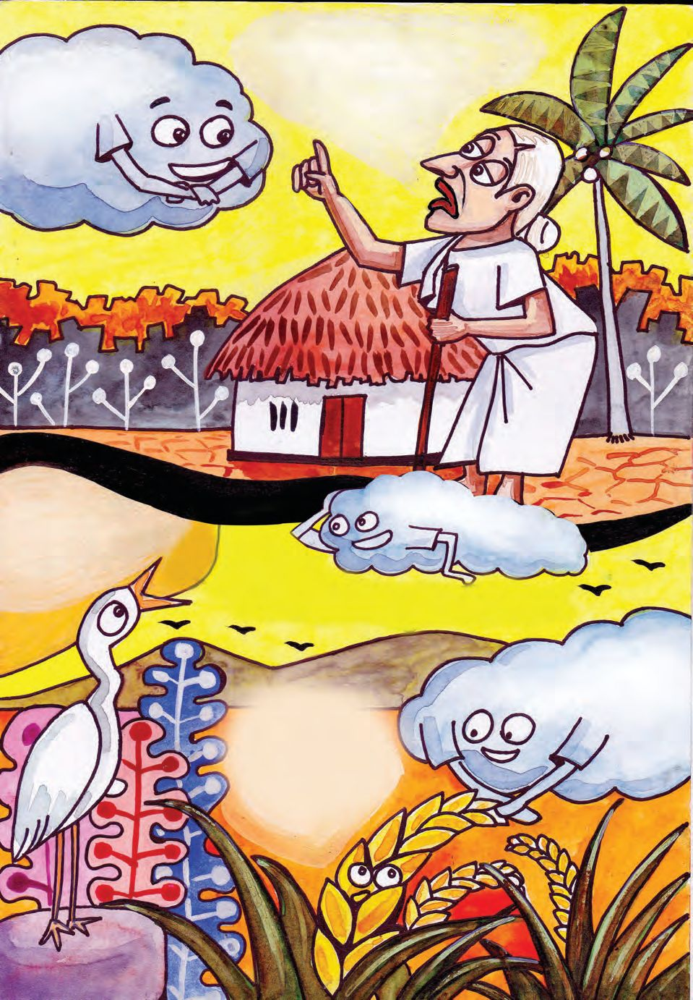
ഓ പിന്നെ പെയ്യാം
ചൂട് എടുത്തിട്ട് വയ്യ മേഘമേ, വേഗം മഴ കൊൊണ്ടുവാ
ഓപ
ിന്നെ
പെയ്യാം
എങ്ങും തുള്ളി വെള്ളമില്ല. മേഘമേ മഴയെ കൊൊണ്ടുവാ
ഒന്ന് വേഗം പെയ്യ് ഞങ്ങൾ ഉണങ്ങിപ്പപോവുന്നേ
ഓ പിന്നെ പെയ്യാം
67
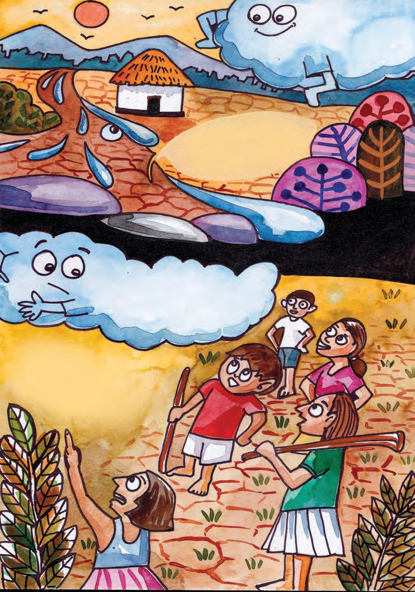
ഓ, പിന്നെ പെയ്യാം
ഒഴുക്ക് നിന്നു, വറ്റി വറ്റി തീർന്നു. മഴ എവിടെ മേഘമേ?
ഇപ്പം പെയ്യാം. ഇപ്പം പെയ്യാം. പെരുമഴയെയും കൂട്ടി വേഗം പോോരാം.
പെയ്യുന്നുണ്ടടോ? ഇല്ലയോോ?
68
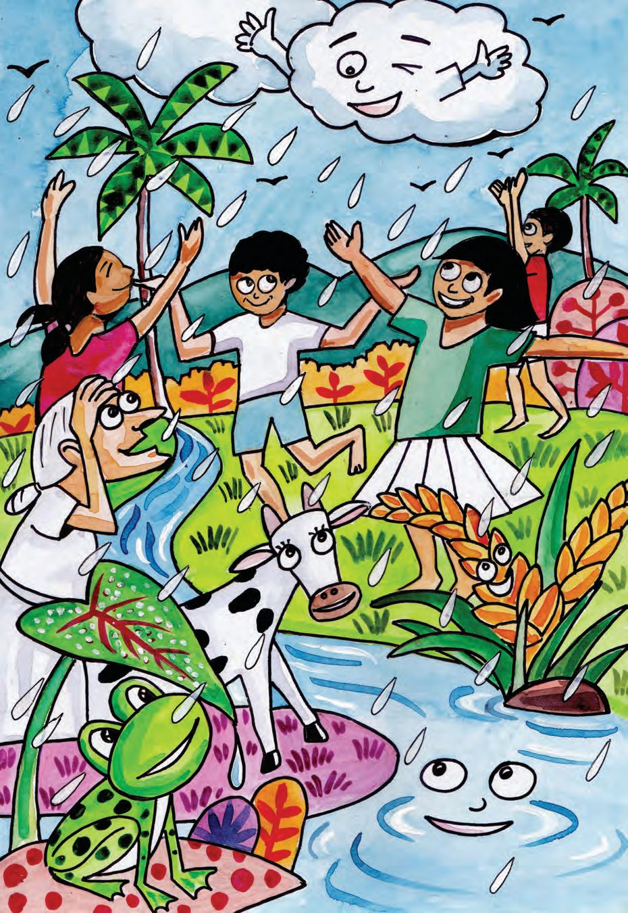
തക തക തൈ തക മഴ വന്നേ
തക തക തൈ തക മഴ വന്നേ
69


മഴക്കാലം തുള്ളി വരുന്നു മഴത്തുള്ളി പറ കൊൊട്ടി വരുന്നു മഴക്കാലം. മലയും കാടും ഇലയും മരവും കിളിയും മഴയിൽ നനയുന്നു. കിളിയും കിളിയുടെ പാട്ടും പാട്ടിൻ താളവും ഈ മഴ നനയുന്നു. മലയും കാടും ................................................................ ................................................................ ................................................................ ..........................................നനയുന്നു
70
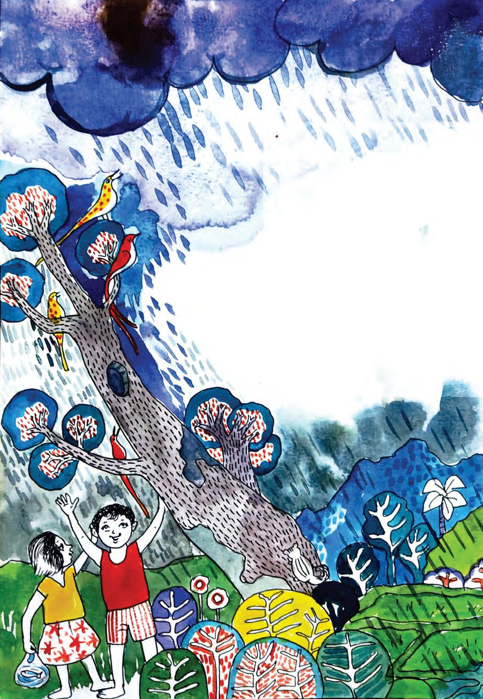
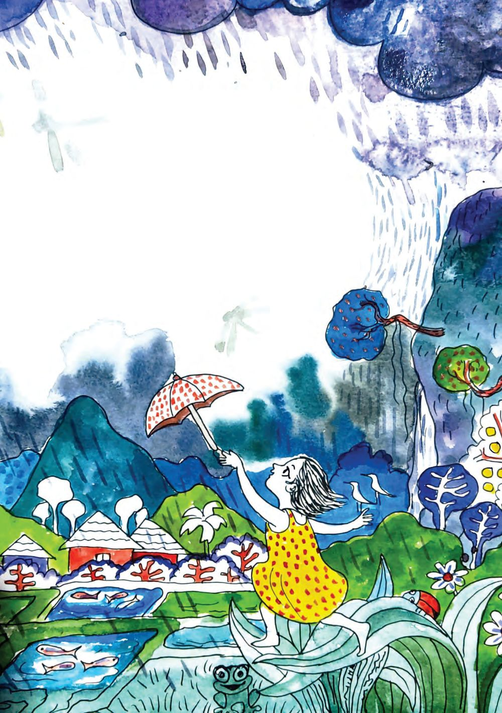
വയലൊൊഴുകുന്നു വഴിയൊൊഴുകുന്നു കുളവും പുഴയിൽ ചേരുന്നു. മണ്ണലിയുന്നു മനസ്സലിയുന്നു പകലും ഇരുട്ടു പുതയ്ക്കുന്നു. കിളിയും കിളിയുടെ പാട്ടും പാട്ടിൻ താളവും ഈ മഴ നനയുന്നു.
71
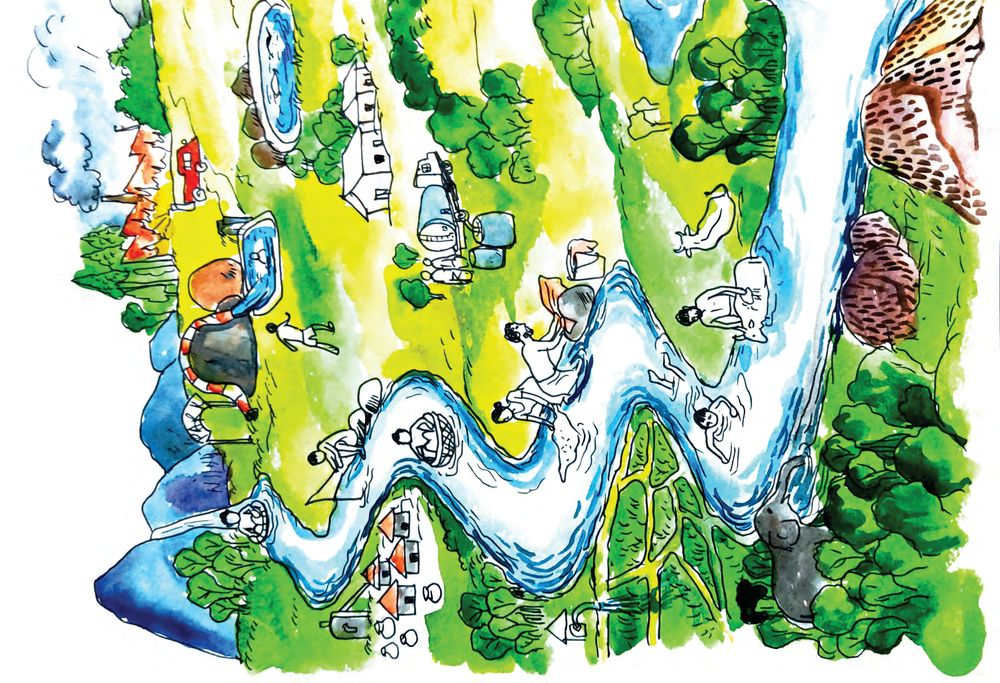
കണ്ടെത്താം എഴുതാം
72

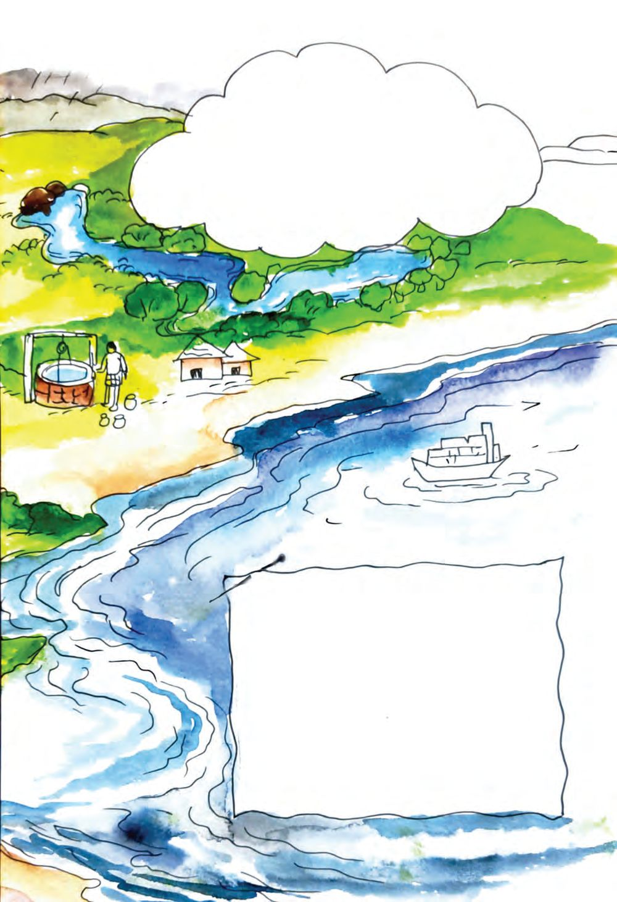
ജലം എവിടെല്ലാം?
ജലം എന്തിനെല്ലാം?
73
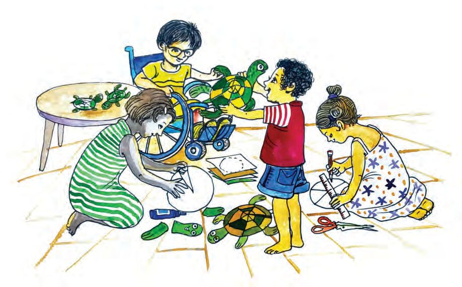
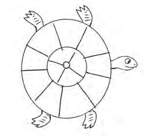
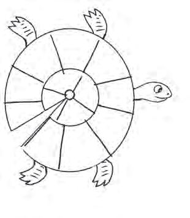
ആമയെ നിർമ്മിക്കാം പേപ്പറിൽ ഇതേപോോലെ വട്ടം വരച്ച് വെട്ടി എടുക്കുക.
ഇതുപോോലെ വരച്ച് ഇഷ്ടമുള്ള നിറം നൽകുക. ഒരു വശത്തുനിന്ന് നടുവിലേക്ക് മുറിക്കുക. മുറിച്ച വശം മറ്റേ വശത്തിന് മുകളിൽ കയറ്റിവച്ച് ഒട്ടിക്കുക.
74
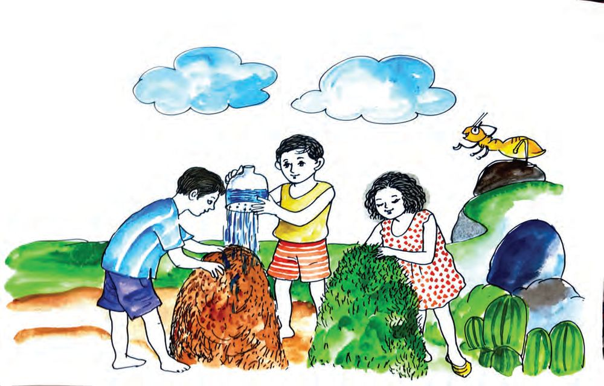
മഴ പെയ്യിക്കാം (പരീക്ഷണം)
പെയ്താലും കുറ്റം പെയ്തില്ലെങ്കിലും കുറ്റം.
ചെയ്തതും കണ്ടതും
75
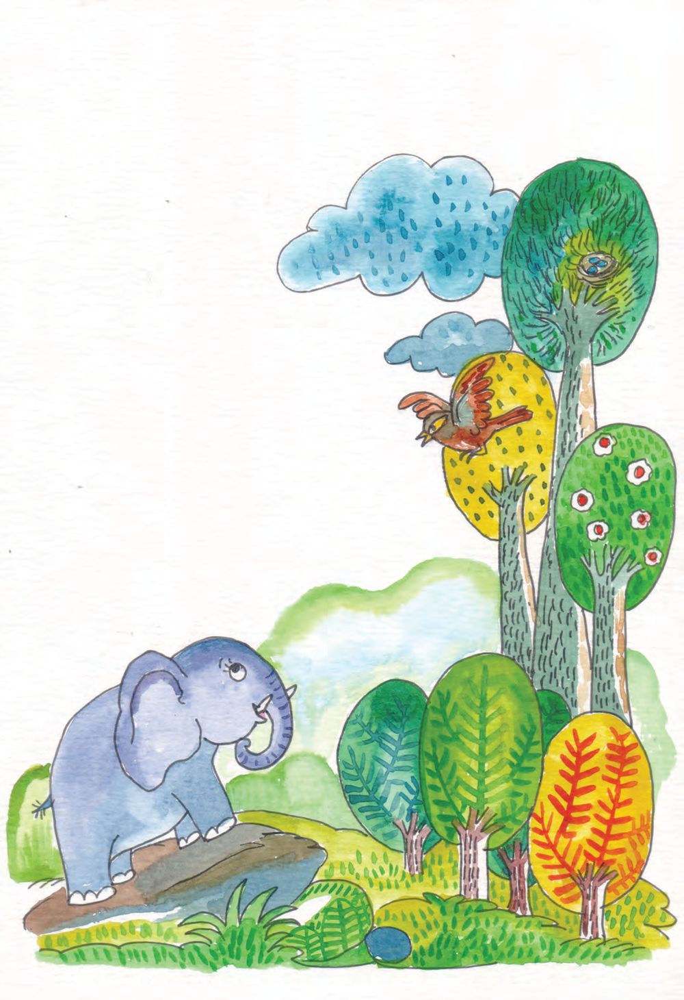

9 ആഹാ! എന്ത് സ്വാദ് ! ആന നടന്നുവന്നു. മൈന പറന്നുവന്നു. വിശക്കുന്നു പഴം വേണം.
എനിക്കും വിശക്കുന്നു പഴം വേണം.
വാ വാ വേഗം പോോകാം.
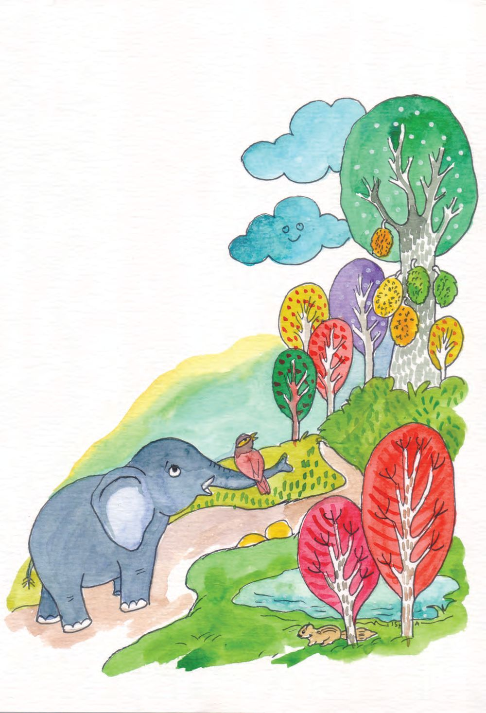
ആന നടന്നു മൈന പറന്നു.
ആഹാ! എന്തു നല്ല ഗന്ധം!
അതാ ചക്കപ്പഴം.
77
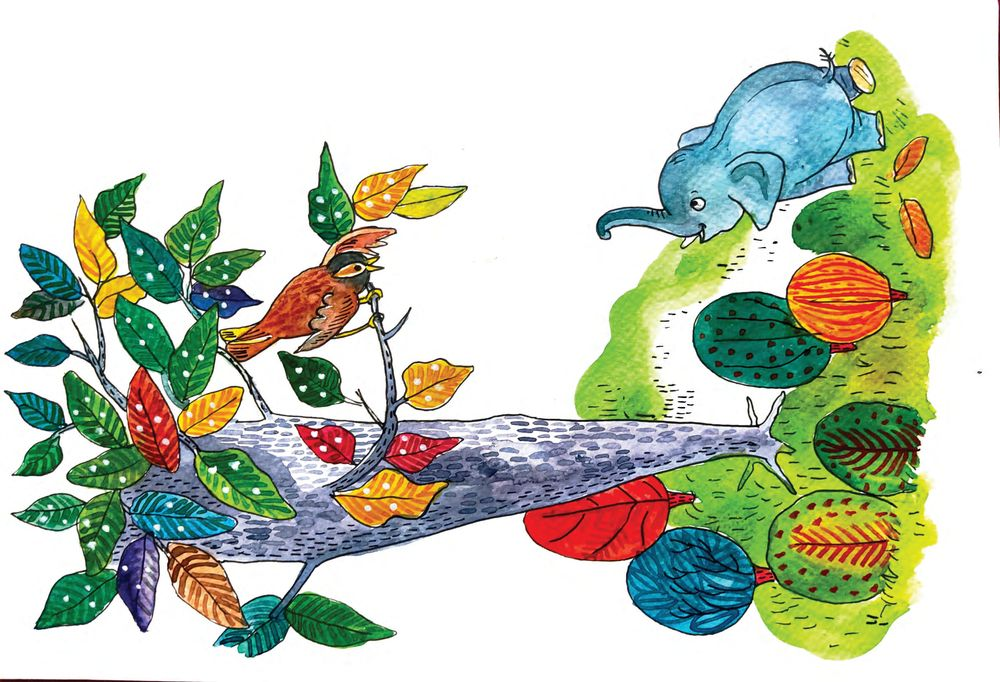

ആന ചക്കപ്പഴം പറിച്ചു. മൈനയെ നോോക്കി. അം!
എന്തു നല്ല സ്വവാദ് ആഹാ! എനിക്ക് ഇല്ലേ?
നിനക്ക് പിന്നെ തരാം.
78
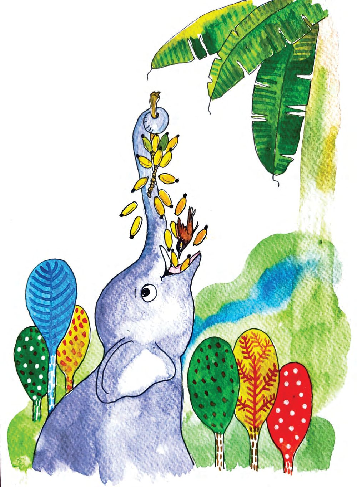
ആന പഴക്കുല ഉയർത്തി വായ തുറന്നു പഴക്കുല കുലുക്കി തുരുതുരാന്ന് പഴമെല്ലാം വായിലേക്ക് വീണു.
എന്തു നല്ല സ്വവാദ്! ആഹാ!
ആന നോോക്കിയപ്പപോൾ മൈനയെ കാണാനില്ല! എവിടെപ്പപോയി?
79
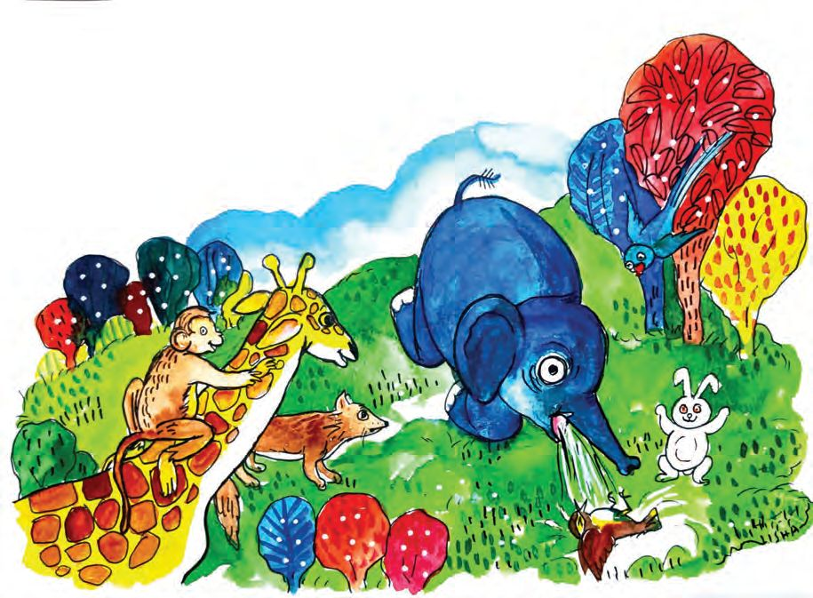
ആന നിലവിളിച്ചു. ആരോോ വയറ്റിൽ കൊൊത്തുന്നേ! ഹോോ! ഹോോ! വേദന വേദന ! ഭയങ്കര വേദന ! സഹിക്കാൻ പറ്റുന്നില്ല ! വൈദ്യനെ കാണണം ആന ഓടി.
ജിറാഫ്
: ഫൂ ഫൂ എന്ന് ശക്തിയായി ഊതൂ...
ആന : ഫൂ ഫൂ (ആന ഏമ്പക്കം വിട്ടു. മൈന പുറത്തായി) ആന
: നന്ദി ജിറാഫേ, നന്ദി.
ജിറാഫ് ചുറ്റും നോോക്കി. ഒത്തിരി മൃഗങ്ങളും പക്ഷികളും എല്ലാവർക്കും മധുരഫലങ്ങൾ വേണം. 80
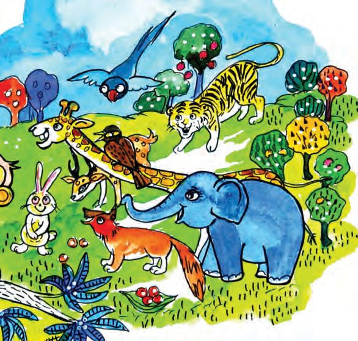
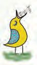
ആഞ്ഞിലിപ്പഴം, അമ്മുമ്മപ്പഴം ഇത്തിപ്പഴം, ഇലഞ്ഞിപ്പഴം ഉള്ളിച്ചാമ്പ, പനിനീർച്ചാമ്പ ചക്ക, മാങ്ങ, പപ്പായ.......... ..................................................... ..................................................... മധുരഫലങ്ങൾ പലതുണ്ട് മധുരം കിനിയും ഫലമെല്ലാം പറിച്ചുതിന്നാം സ്വാദോോടെ. ..................................................... .....................................................
81
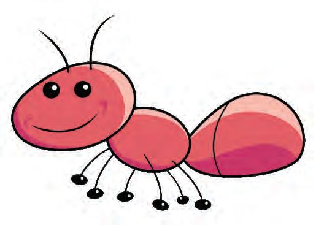
ജിറാഫ് തല ഉയർത്തി മധുരഫലങ്ങൾ പറിച്ചു. എല്ലാവർക്കും കൊൊടുത്തു. മൈനയ്കക്കകും ആനയ്കക്കകും കൊൊടുത്തു. ‘‘ഭേഷ് ! അതു നന്നായി’’. എല്ലാവരും കരഘോോഷം മുഴക്കി. ജിറാഫിനെ അഭിനന്ദിച്ചു. വികൃതിക്കുരങ്ങ് എല്ലാവരെയും ചേർത്ത് സെൽഫിയെടുത്തു. ഭംഗിയുള്ള ഫോോട്ടടോ ജിറാഫ് ആനയുടെ കാതിൽ ഒരു രഹസ്യയം പറഞ്ഞു. എന്താ ആ രഹസ്യയം?
82
ആനച്ചാരേ, സ്വഭാവത്തിനും സുഗന്ധം വേണം
പഴ(നിറ)ങ്ങൾ കൊൊണ്ടൊൊരു മഴവില്ല് തീർക്കാം
പൂവും പഴവും പൂവിന് നിറമുണ്ട് പഴത്തിന് നിറമുണ്ട് പൂവിന് മണമുണ്ട് പഴത്തിന് മണമുണ്ട് പൂവിന് തേനുണ്ട് പഴത്തിന് രുചിയുണ്ട്. 83
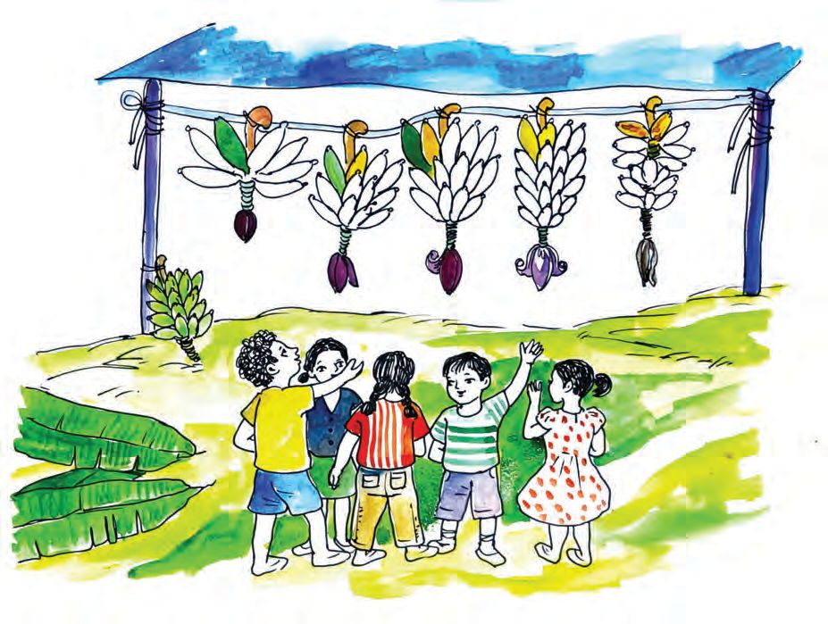
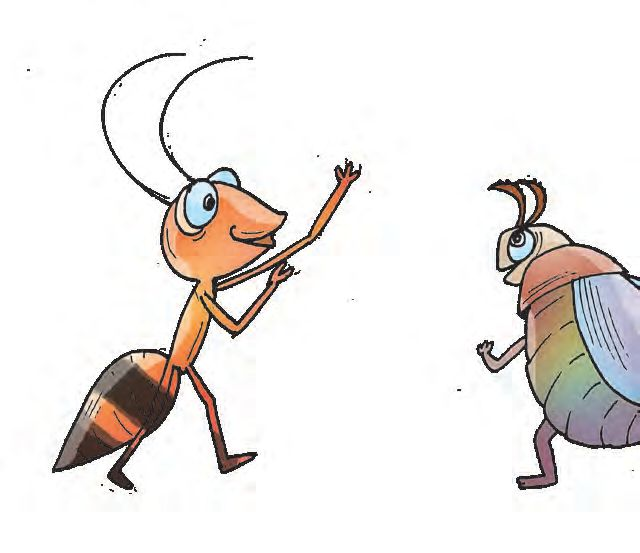
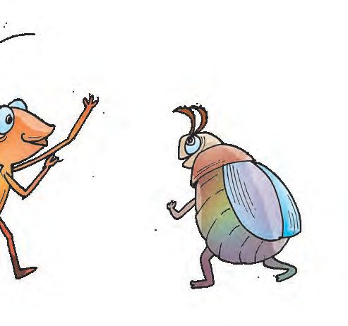
വാഴക്കുലയുടെ നിറം മാറ്റം
ഏതുപഴം? എങ്ങനെയറിഞ്ഞു പഴുത്തെന്ന് ? കണ്ടറിഞ്ഞു പഴുത്തെന്ന്. മണത്തറിഞ്ഞു പഴുത്തെന്ന്. തൊൊട്ടറിഞ്ഞു പഴുത്തെന്ന്. രുചിച്ചറിഞ്ഞു പഴുത്തെന്ന്. വയറു നിറഞ്ഞു പഴം തിന്ന്.
മണപ്പരീക്ഷയിൽ ഞാൻ ജയിക്കും. 84
രുചിപ്പരീക്ഷയിൽ ഞാൻ തിന്ന് തിന്ന് ജയിക്കും.
പഴങ്ങൾ തരംതിരിക്കാം
85
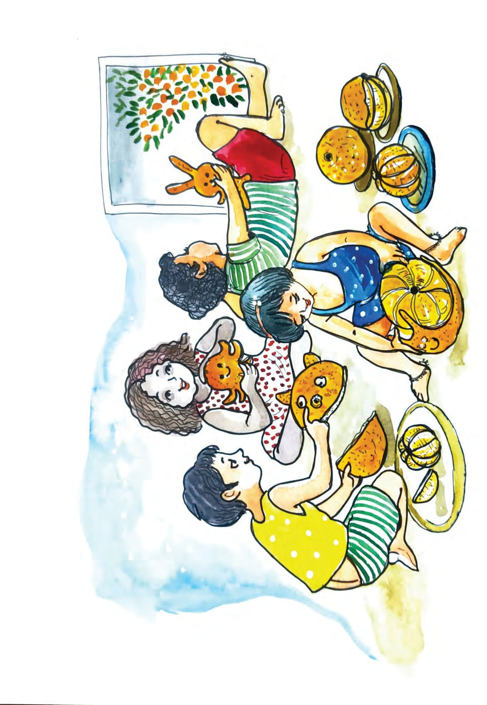
ഓറഞ്ചുതൊൊലികൊൊണ്ടുള്ള
നിർമ്മാണപ്രവർത്തനങ്ങൾ
ഉത്തരം പറയാമോോ 1. ചെടിയുടെ മേലെ കായ കായുടെ മേലേ ചെടി 2. അകത്തറുത്താൽ പുറത്തറിയും 3. ആയിരം തത്തയ്ക്ക് ഒരൊൊറ്റ കൊൊക്ക്
86